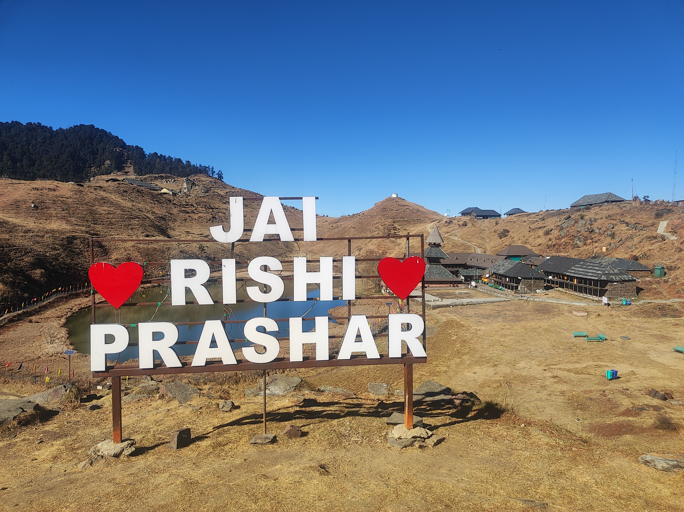

Your Blog Title Goes Here

Things that actually counts class
Read EntryI write essays at the intersection of science and daily life. This is my digital notebook for thoughts on research and navigating academia.


Things that actually counts class
Read Entry
We often look for stability in materials, but sometimes instability is where the interesting physics hides. Here are my notes on the quasiparticle analysis and what it means for future electronics.
Read EntryOccasional thoughts on physics, research, and life at IIT Mandi.